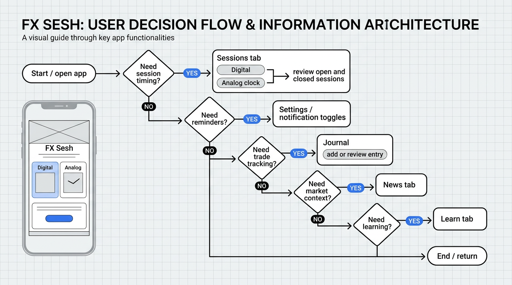
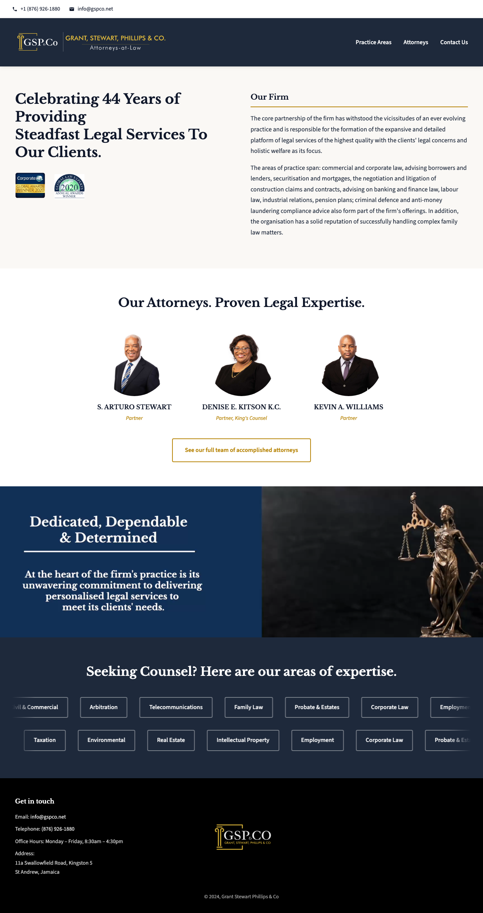
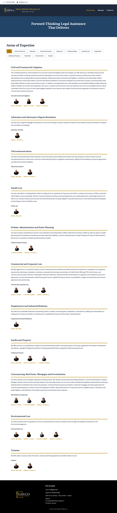
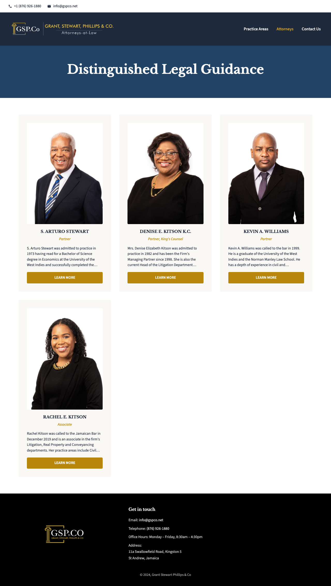
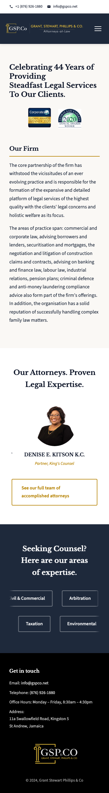

User journey map
This map reflects the real app flow: users open FX Sesh for session awareness first, then branch into reminders, journaling, news, learning, and re-entry via widget or notifications.

I approach UI/UX as a balance between visual design and user behavior. My focus is on creating interfaces that feel intuitive, reduce friction, and guide users toward key actions while maintaining a strong and consistent visual identity.
Complete Product Design involving Research, UI/UX, Backend Preparation, Advertising Experience Design, Notifications and Multi-Screen Flows.
Standard Client Website Design.
Case Study
Your foreign exchange market clock. Session awareness at a glance. A mobile app and companion website for traders.
The interface was structured with a clear visual hierarchy, ensuring key information is immediately visible while secondary elements remain accessible without overwhelming the user.
Spacing, typography, and color were used intentionally to guide attention and reduce cognitive load.
Primary: Outfit
Outfit
Regular · Medium · SemiBold · Bold


I designed the FX Sesh marketing site to match the app: same brand, clear value prop, and download CTAs so visitors can go straight to the store or beta.

This map reflects the real app flow: users open FX Sesh for session awareness first, then branch into reminders, journaling, news, learning, and re-entry via widget or notifications.
This flow shows how the product guides users based on intent: checking sessions, enabling reminders, logging trades, reading news, or moving into learning content without forcing a single path.

I ran a focused beta-testing phase by reaching out to 15 testers and asking them to use the app in real trading scenarios, then share opinions on clarity, ease of use, and overall usefulness. Their feedback directly shaped the next round of updates: I refined UI details, improved screen clarity, and fixed bugs and functionality issues that surfaced during real use. That process helped move FX Sesh from a concept that worked in theory to a product that felt more stable, more intuitive, and more aligned with how traders actually check sessions, manage reminders, and navigate the app day to day.
Case Study
Visual refresh for a Jamaican law firm. 44 years of legal services, with a clear, trustworthy site for practice areas, attorneys, and contact.
Headings: Libre Baskerville
Libre Baskerville
Regular · Bold · Italic
Body: Source Sans 3
Source Sans 3
Regular · Medium · SemiBold · Bold



